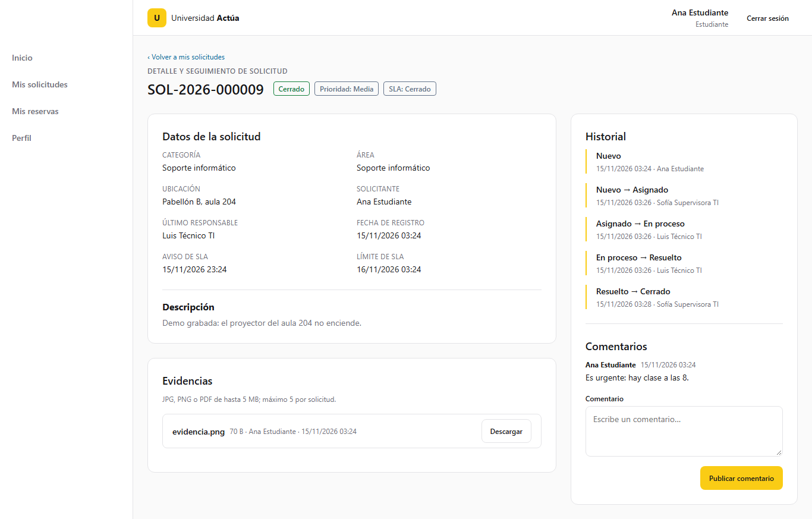
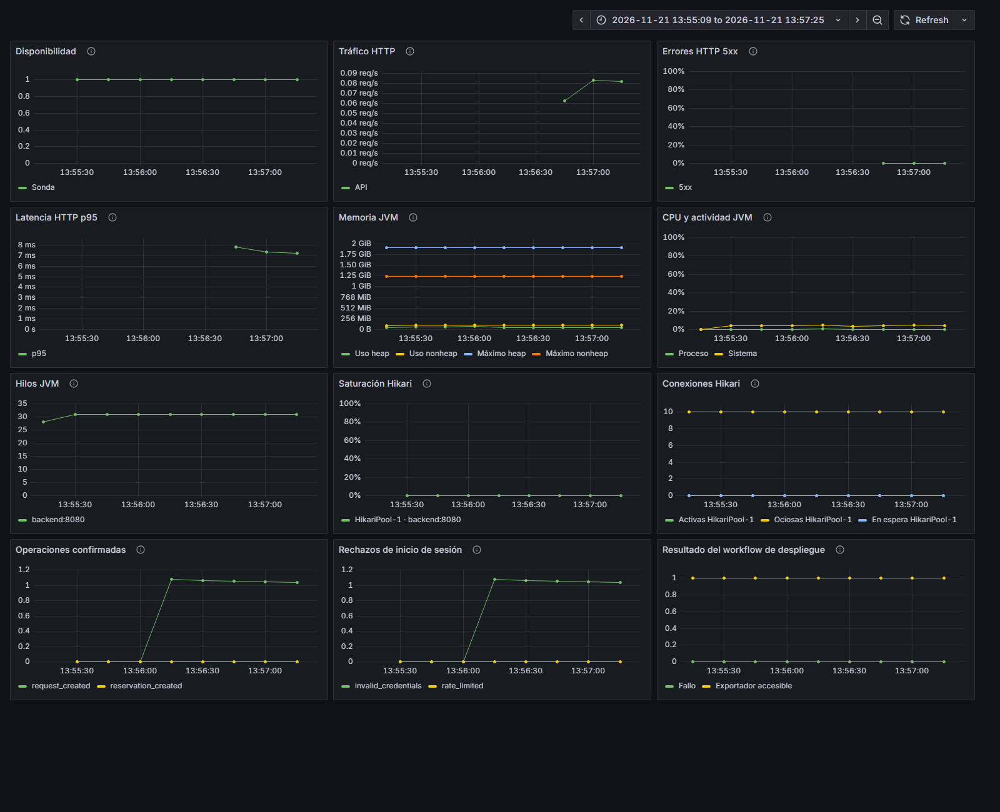

Sistema Web para la Gestión Integral de Servicios Universitarios
Grupo 3 · Taller de construcción de software web · UNMSM, FISI, 2026-II
Sebastian Andree Tejeda Alata (líder) · Marcos Luis Basualdo Ale · Bizarro Ortiz Luis Junior Alfredo ·
Gianpierre Rodrigo Dulanto Romero · Albert Marco Aurelio Huaman Ñahuinlla
Profesor: Candela Arce, David Felix
Un único canal web para registrar, asignar, seguir, medir y auditar las solicitudes de soporte informático, mantenimiento, biblioteca y servicios generales, y para reservar ambientes.
| Fase | Semanas | Resultado |
|---|---|---|
| I | 1–4 | Requisitos, épicas, HU con BDD, arquitectura, Figma y prototipo HTML/CSS/JS. |
| II | 5–10 | MVP end-to-end: React + Spring Boot + MySQL, login, solicitudes, gestión y dashboard. |
| III | 11–13 | OpenAPI, Docker, CI/CD, staging y producción, OWASP. Release Candidate v1.0.0-rc.2. |
| IV | 14–16 | Sesión única, observabilidad, seguridad, carga y estrés, UI/UX, UAT y manuales. v1.0.0. |
frontend-uni, backend-uni e infra-uni.main) y producción (production) con bases separadas.
Plan B: Docker Compose local o video. Guion en GUION-DE-DEMOSTRACION.pdf.
Staging: frontend-uni-tdk7.vercel.app
Producción: frontend-uni-wx9m.vercel.app
Local: localhost:3000
*.demo@universidad.example
Solo en staging y local.
| Tipo | Herramienta |
|---|---|
| Unitarias e integración | JUnit 5, Testcontainers (MySQL real), Vitest |
| E2E y accesibilidad | Playwright + axe |
| Contrato API | OpenAPI + Redocly + OpenApiContractIT |
| Carga, estrés y smoke | k6 2.4.0 |
| Aceptación y usabilidad | UAT con usuarios (ver INFORME-DE-PRUEBAS.pdf) |
HttpOnly.404 fuera de alcance, 403 sin permiso.429), validación de archivos y descargas firmadas.health es público.
correlationId, traceId y spanId.mvn verify, imagen y smoke, CodeQL, dependencias.v1.0.0-rc.2 → v1.0.0.main.v1.0.0 en los tres repositorios.Gracias. ¿Preguntas?